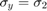
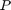
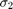
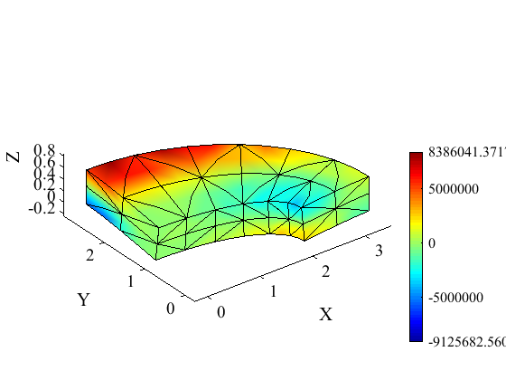
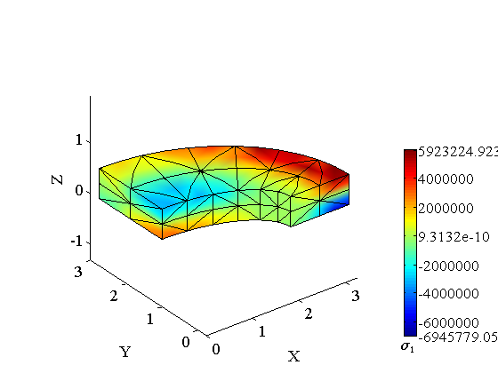

Elliptical plate with elliptical hole; T10 tetrahedra
Contents
Link to the m-file.
Description
Thick elliptical plate with an elliptical hole is supported on its exterior boundary and is loaded at the top with transverse pressure. This is a NAFEMS Benchmark, Test No. LE10.
In this tutorial, the plate is discretized with tetrahedral T10 solid elements. Because of the symmetries of the geometry and load, only quarter of the plate is modeled.
 |
| Figure 1. Definition of the geometry of the thick elliptical plate |
The  at the point  is to be determined. The reference value is -5.38 MPa.
Solution
function pub_LE10NAFEMS_T10
pu=physical_units_struct;
Define the material properties.
E = 210e3*pu.MEGA*pu.PA;
nu = 0.3;
rho= 8000*pu.KG/pu.M^3;
The geometrical parameters:
Ae =3.25*pu.M;% Major radius of the exterior ellipse Be =2.75*pu.M;% Minor radius of the exterior ellipse Ai =2.0*pu.M;% Major radius of the interior ellipse Bi =1.0*pu.M;% Minor radius of the interior ellipse t =0.6*pu.M;% thickness of the plate tol=t/100;% geometrical tolerance
The applied pressure on the top face is
qmagn=1*pu.MEGA*pu.PA;
The chosen mesh parameters. This is for the coarse mesh:
nr = 2;% number of elements radially nc = 6;% number of elements circumferentially nt = 2;% number of elements through the thickness % %% % Whereas these numbers of elements are for the fine mesh. % nr = 2*2;% number of elements radially nc = 2*6;% number % of elements circumferentially nt = 2*2;% number of % elements through the thickness
Check that the number of elements through the thickness is an even number, the application of the boundary conditions relies on it.
nt=round(nt*2)/2;
The mesh is generated first in the XYZ coordinates as a block. The first coordinate is normalized width of the plate, the second coordinate is angular. The third coordinate is the thickness.
[fens,fes]=H8_block(1.0, pi/2, t, nr, nc, nt);
The node set is now going to be meshed with tetrahedra T4.
[fens,fes] = T4_hull(fens.xyz);
And the resulting mesh is going to be converted to quadratic tetrahedra T10.
[fens,fes] = T4_to_T10(fens,fes);
At this point we will extract the boundary mesh.
bdry_fes = mesh_boundary(fes, struct('other_dimension', 1.0));
We will also select those finite elements are on the external elliptical boundary and those that are on the upper face of the plate. It is particularly easy because the mesh geometry is still a box.
exteriorbfl = fe_select(fens, bdry_fes, struct('box', [1,1,0,pi/2,0,t],'inflate',tol)); topbfl = fe_select(fens, bdry_fes, struct('box', [0,1,0,pi/2,t,t],'inflate',tol));
Now the geometry can be warped into the elliptical shape.
for i=1:count(fens) r=fens.xyz(i,1); a=fens.xyz(i,2); z=fens.xyz(i,3); fens.xyz(i,:)=[(r*Ae+(1-r)*Ai)*cos(a) (r*Be+(1-r)*Bi)*sin(a) z]; end
We are ready to bundle up the model data so they can be passed to the solver.
clear model_data model_data.fens =fens;% the finite element node set
The region uses the minimal 4-point tetrahedron rule.
clear region region.fes= fes; region.rho =rho; region.E=E; region.nu=nu; region.integration_rule =tet_rule(struct('npts',4)); model_data.region{1} =region;
The essential boundary conditions: The nodes on the symmetry planes are selected using box criteria.
clear essential essential.component= [1]; essential.fixed_value= 0; essential.node_list = fenode_select (fens,struct('box',[0,0,-inf,inf,-inf,inf],'inflate',tol)); model_data.boundary_conditions.essential{1} = essential; clear essential essential.component= [2]; essential.fixed_value= 0; essential.node_list = fenode_select (fens,struct('box',[-inf,inf,0,0,-inf,inf],'inflate',tol)); model_data.boundary_conditions.essential{2} = essential;
The essential boundary conditions on the exterior elliptical boundary resemble, but are not equivalent to, complete clamping. All in-plane components are fixed.
clear essential
essential.component= [1:2];
essential.fixed_value= 0;
essential.node_list = connected_nodes (subset(bdry_fes,exteriorbfl));
model_data.boundary_conditions.essential{3} = essential;
And only the nodes on the mid-plane on the supported exterior boundary are fixed in the Z direction.
clear essential essential.component= [3]; essential.fixed_value= 0; essential.node_list = intersect(connected_nodes(subset(bdry_fes,exteriorbfl)),... fenode_select(fens,struct('box',[-inf,inf,-inf,inf,t/2,t/2],'inflate',tol))); model_data.boundary_conditions.essential{4} = essential;
The top of the plate is loaded by normal traction (pressure).
clear traction traction.fes =subset(bdry_fes,topbfl); traction.traction= [0;0;-qmagn]; traction.integration_rule =tri_rule(struct('npts',3)); model_data.boundary_conditions.traction{1} = traction;
Invoke the statics solver.
model_data =deformation_linear_statics(model_data);
Now we have our displacement results. The stress is to be calculated in the location of this node:
Pn=fenode_select (fens,struct('box',[Ai,Ai,0,0,t,t],'inflate',tol));
The transverse deflection at the point P is:
disp(num2str(somel(gather_values( model_data.u,Pn),3)))
-9.9191e-05
The  stress at point P is going to be stored in this variable:
sigma2P = [];
We are going to plot the stress using a nodal stress field. It is extracted from the quadrature points. The inverse-distance interpolation of the quadrature point data is used.
model_data.postprocessing.u_scale=1000;
model_data.postprocessing.stress_component=2;
model_data.postprocessing.colormap=cadcolors2;
function observer(i, stressf,model_data)
sigma2P = gather_values( stressf,Pn);
end
model_data.postprocessing.observer =@ observer;
model_data=deformation_plot_stress(model_data);
 The computed stress should be compared with -5.38 MPa as the reference value.
disp( ['Stress at P=' num2str(sigma2P/(pu.MEGA*pu.PA)) ' MPa']); disp( ['i. e. ' num2str(sigma2P/(pu.MEGA*pu.PA)/(-5.38)*100,5) '% of reference value']);
Stress at P=-2.5944 MPa i. e. 48.223% of reference value
The 10-node tetrahedron mesh does not deliver good accuracy of the stress distribution at the surface with the default inverse-distance interpolation of the stress. The stress at the location of point P peaks at the surface. The inverse-distance interpolation cannot take this into account.
A much more successful stress post-processing strategy is to use the Super-convergent Patch Recovery (SPR).
Note that we are setting the flag use_spr.
model_data.postprocessing.u_scale=1000;
model_data.postprocessing.stress_component=2;
model_data.postprocessing.colormap=cadcolors2;
model_data.postprocessing.observer =@ observer;
model_data.postprocessing.use_spr= true;
model_data=deformation_plot_stress(model_data);
 The computed stress should be compared with -5.38 MPa as the reference value.
disp( ['Stress at P=' num2str(sigma2P/(pu.MEGA*pu.PA)) ' MPa']); disp( ['i. e. ' num2str(sigma2P/(pu.MEGA*pu.PA)/(-5.38)*100,5) '% of reference value']);
Stress at P=-4.5895 MPa i. e. 85.306% of reference value
The estimate of the peak stress improved considerably with the SPR technique.
end